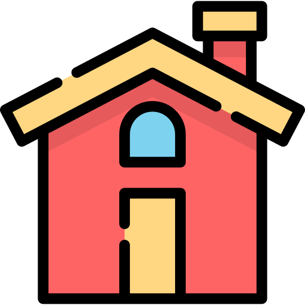

  <!--action's buttons-->
  <span class="window-action-btn">
    
  </span>
  <span class="window-action-btn" style="left: 20px">
    
  </span>
  <span class="window-action-btn" style="left: 40px">
    
  </span>
  <div class="window-head">
    <div class="window-head-draggable">
      
      <span class="window-head-title">Explorer</span>
    </div>
  </div>
  <div class="window-sidebar disable-user-select"></div>
  <div class="window-navbar"></div>
  <div class="window-body item-container"></div>
  <div class="explorer-footer"></div>
